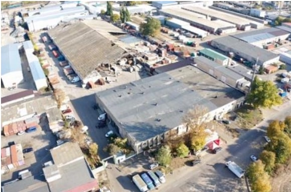
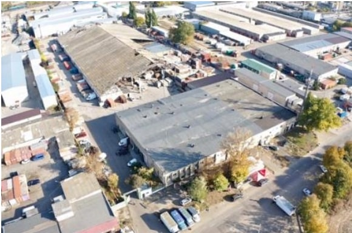
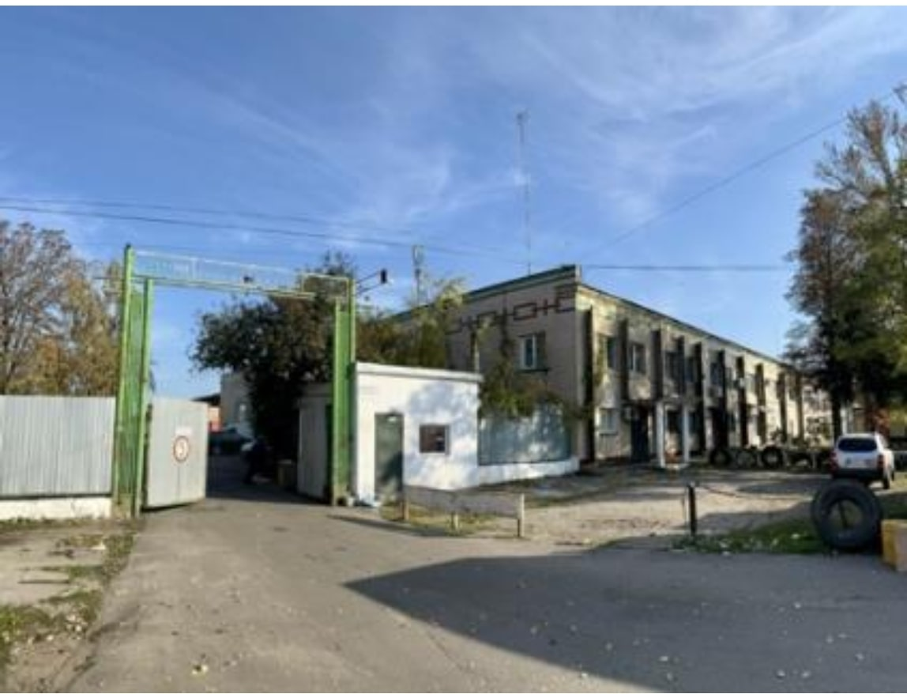
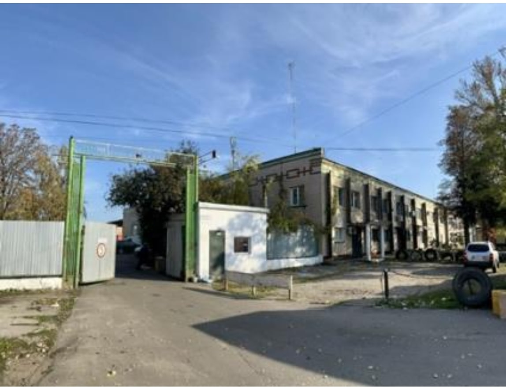
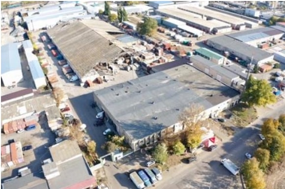
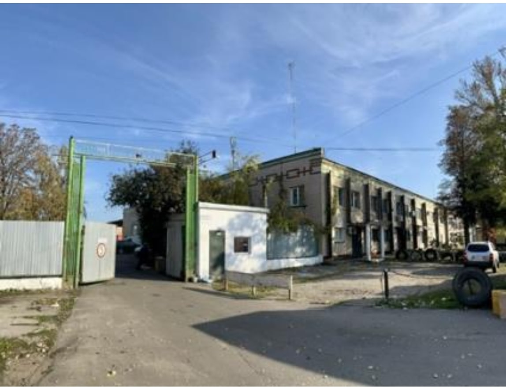

Фотогалерея
 

 

«ЗАТВЕРДЖЕНО»
Рішенням акціонерів ПРИВАТНОГО АКЦІОНЕРНОГО ТОВАРИСТВА «ДУНАЙВОДБУД-124», №1 від 17.06.2025 р.
ПОВІДОМЛЕННЯ
про проведення позачергових Загальних зборів акціонерів ПРИВАТНОГО АКЦІОНЕРНОГО ТОВАРИСТВА «ДУНАЙВОДБУД-124», Ідентифікаційний код юридичної особи 01035874, 67806, Україна, Одеська обл., Овідіопольський р-н, 7-й Км. Овідіопольської Дороги
ШАНОВНИЙ АКЦІОНЕР!
Цим повідомляємо про скликання та проведення позачергових Загальних зборів ПРИВАТНОГО АКЦІОНЕРНОГО ТОВАРИСТВА «ДУНАЙВОДБУД-124» (далі – Товариство) за ініціативою акціонерів (далі – Загальні збори), які сукупно є власниками 75.3975% акцій Товариства.
Позачергові Загальні збори будуть проводитись дистанційно, згідно Рішення Національної комісії з цінних паперів та фондового ринку 26.04.2023 року № 466.
Дата проведення: 31 липня 2025 року.
Початок надсилання бюлетенів: 21 липня (звичайні), 27 липня (кумулятивні).
Кінцева дата подачі бюлетенів: 31 липня 2025 року, до 18:00.
Посилання на бюлетені: http://7km.website/
Дата складання переліку учасників: 28 липня 2025 року.
Порядок денний та проєкти рішень:
Контактна особа: Ворніков Василь Петрович
Телефон: +380967604712
Email: orenda7km@gmail.com
Повний текст повідомлення включає також опис прав акціонерів, порядок ознайомлення з документами, довіреності, участі представників тощо.
Що має надати акціонер (представник акціонера):
Для участі у позачергових загальних зборах акціонерів ПРАТ «ДУНАЙВОДБУД-124», які скликаються на 31.07.2025 та проводяться дистанційно, відповідно до Рішення НКЦПФР від 26.04.2023 №466:
Примітка: Інформація базується на Порядку скликання та проведення дистанційних загальних зборів акціонерів, затвердженого рішенням НКЦПФР від 06.03.2023 №236.
Территориальное расположение: Наше предприятие владеет территорией 1,6 гектар на территории «Промрынок 7км», на которой расположены складские и торговые помещения. Ведётся реконструкция территории и помещений. Планируемая общая площадь после реконструкции – 20000 м².
Инфраструктура: Асфальтированные подъездные пути, охраняемая территория, собственная трансформаторная подстанция, скважина, 15 парковочных мест.
Преимущества объекта: Уникальное расположение возле главных торговых площадей. Единственное помещение с большой площадью (2700 м²), необходимой инфраструктурой и выходом фасада длиной 60 м на ул. Базовую.
Состояние помещения: Возможность одного или двух этажей (2700 м² или 5400 м²). Высота потолков 7м/3,5м. Промышленный пол с антипылевым покрытием, бетонные стены, свободная планировка.
Возможности развития: Потенциальное расширение складских помещений на территории.
Адрес: Одесская область, Одесский район, пгт Авангард, ул. Базовая, 10


Василій
Телефон: 096 760-47-12
Email: orenda7km@gmail.com